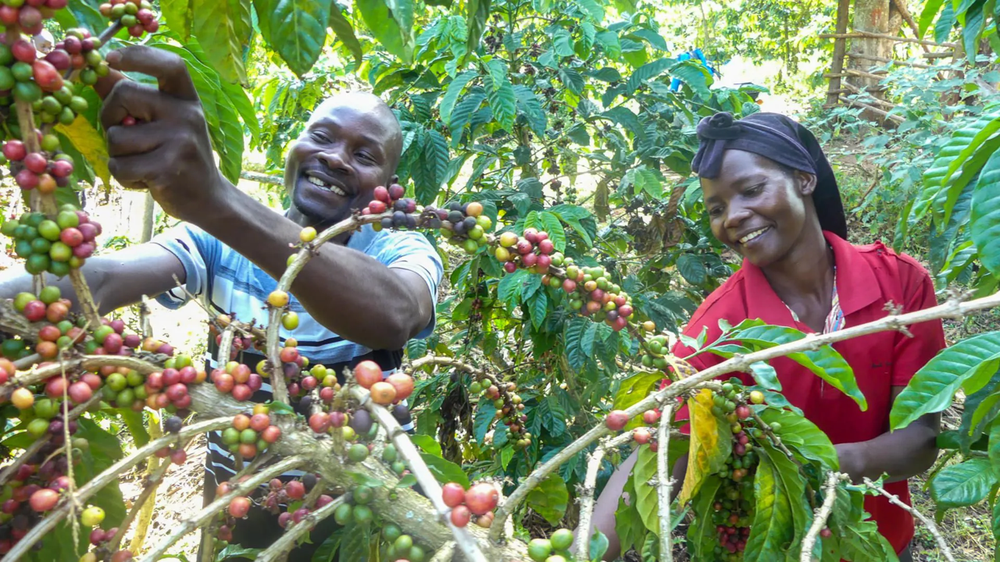
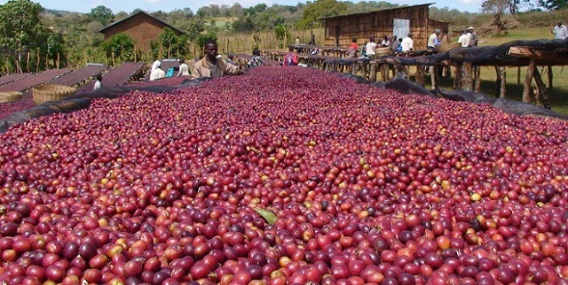
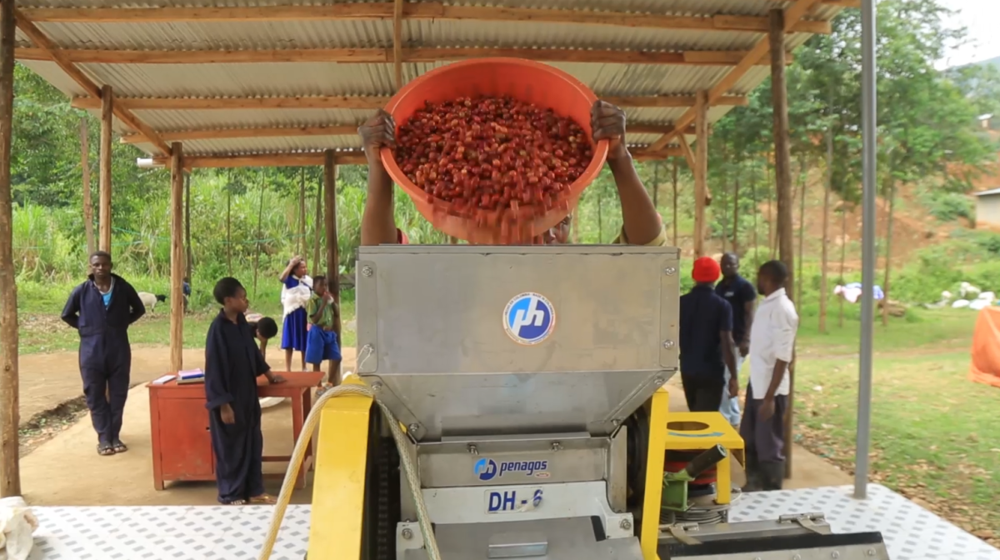
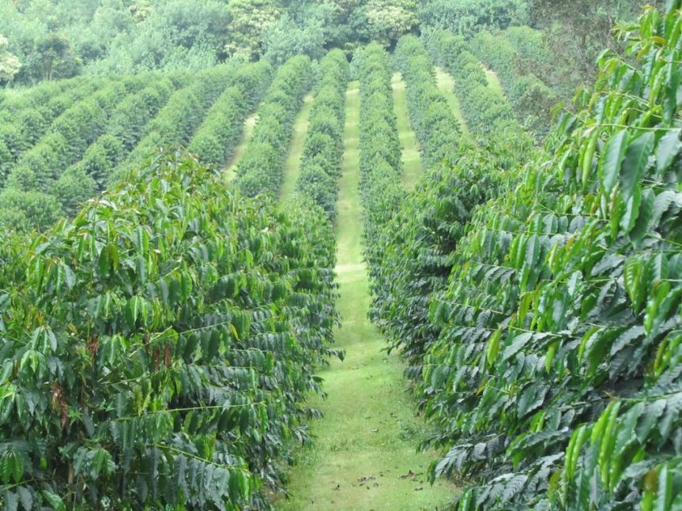
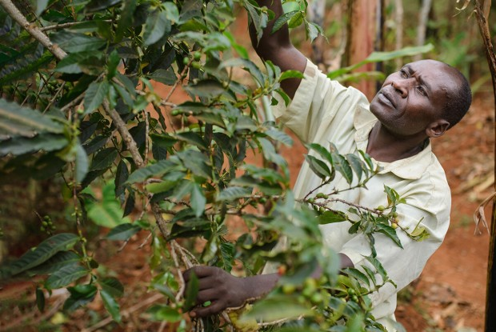
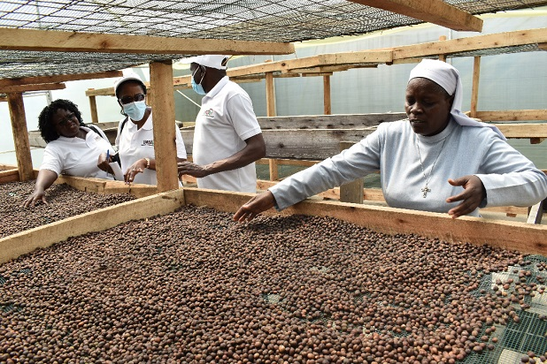

KANO COFFEE FARMERS ASSOCIATION
Quality Coffee from the Heart of Uganda
HOME PAGE
ABOUT US
GALLERY
CONTACT US
Take a look at our coffee fields, coffee processing machines and other events at Kano Coffee Farmers Association.






Designed By Kakuru Benard 2024